はじめに
俺は大学までサッカーやってて、それまで私服なんてジャージかスウェットしか持ってなかった。
就職して、初めてまともに服を選ばなあかんくなった時、マジで何もわからんかった。
とりあえずネットで「メンズ ファッション」って調べて、書いてある通りに買ってみた。白T、デニム、白スニーカー。
鏡見た時、「なんか思ってたんと違うな」って。
雑誌のモデルはスタイルが良くて、そりゃかっこよく見えるわなと。
でも普通の体型の俺が同じ服を着ても、同じにはならんかった。
そこから色んな服を試した。高い服も買った。でも変わらん。
あの頃の俺に足りなかったのは、「かっこいい服」じゃなくて、「スタイルがよく見える服の選び方」やった。
だからこのプレゼントでは、「結局どれを買えばいいの？」に全部答えた。
商品も、サイズの選び方も、体型別・身長別の考え方も、予算別のリアルな話も。
読み終わったら、スマホのスクショだけ撮って、そのまま買いに行ってみて。
大前提：99%の男が勘違いしてること
最初にこれだけ頭に入れてほしい。
マジでこれ。100回言いたい。
SNSとか見てたら、女性インフルエンサーが「この服装の男、惚れる！」とか言ってるやんか。
あれ、嘘ではないんやけど、よく見てみ。ああいう投稿に出てくる男、全員スタイルがいいんですよ。
かっこよく見えてる理由は「服」じゃなくて「スタイル」。服の役割って「かっこよくすること」じゃない。
服の役割は2つしかない。
- 清潔感を出すこと
- スタイルをよく見せること
これだけ。マジでこれだけ。
だから俺がこのプレゼントで伝えるのは、「おしゃれな服の選び方」じゃなくて、「スタイルがよく見える服の選び方」。
ここの認識がズレてると、どれだけ金かけても服迷子のままになるから、まずこれだけは覚えといてほしい。
じゃあ「スタイルがよく見える」って具体的にどうすればいいのか。服を1枚でも買う前に、まず3つだけ理解してほしいことがある。
まず知っておくべき「スタイルの鉄則」3つ
これ知ってるか知らんかで、同じ服を着てもまるで別人になる。
鉄則①：下半身は黒で統一する
パンツ、靴下、シューズ。この3つを全部黒にする。これだけで足がスッと長く見える。
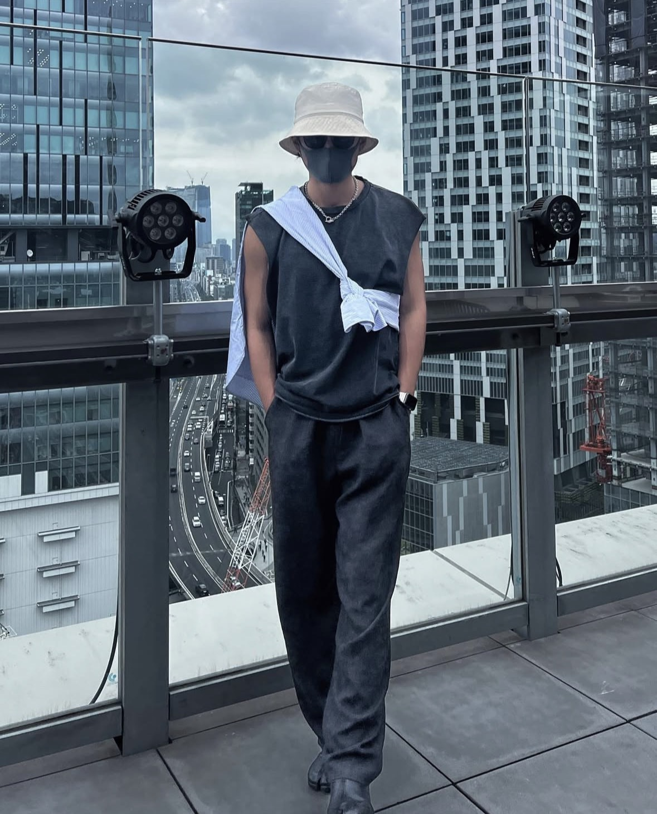
なんでかっていうと、パンツ→靴下→靴が全部同じ色やと、境目が消えて足が1本の線に見えるんですよ。
視覚的に足が長く見えて、結果的に顔が小さく見える。
逆に白い靴下とか履いてみ。パッと見で靴と足が別々に見えて、足が短く見える。スタイルが悪く見える。
だから下半身は黒。これは鉄則。
鉄則②：とにかく身長を盛る
こんなん言うたら怒られるかもしれんけど。
女性が理想とする男性の身長は170cm以上。
だから170ない人は、170あっても、靴で盛れるなら盛った方がいい。
ソール5cmくらいの靴を履くだけで、パッと見のスタイルがむちゃくちゃ変わる。
5cm以上になると「あ、盛ってるな」ってバレやすいから、5cmがちょうどいいライン。
165cm以下の人は、インソール追加して8cmくらい盛れる。165＋8で173cm。全然いける。
鉄則③：サイズ感が全て
どんなにいい服でも、サイズ感が合ってないと台無し。
ポイントはシンプルで、
- 肩の位置が合ってるか（肩の縫い目が肩の骨の上にあるか）
- 着丈が長すぎないか（Tシャツならベルト位置よりちょい下くらい）
- パンツの裾がダボついてないか（靴の甲にちょっと乗るくらいがベスト）
試着する時はこの3つだけ見ればいい。
逆にこの3つがズレてたら、どんなブランドの服でもダサくなる。
この3つの鉄則を押さえた上で、じゃあ具体的に「何を買えばいいのか」をアイテム別に解説していく。
優先順位はこう覚えてほしい。
圧倒的にパンツが大事。上から順に揃えていこう。
STEP 1：パンツ
下半身が整ってないとスタイルが崩壊する。
どんなにいいトップス着ても、パンツがダサかったら全部終わり。だからパンツから始めてほしい。
結論：脳死でこれ買ってきて
→ ユニクロ テーパードパンツ（黒） or ワイドストレートパンツ（黒）
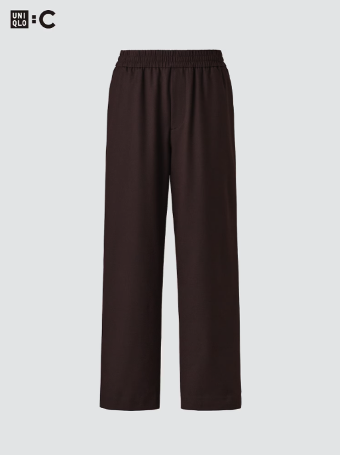
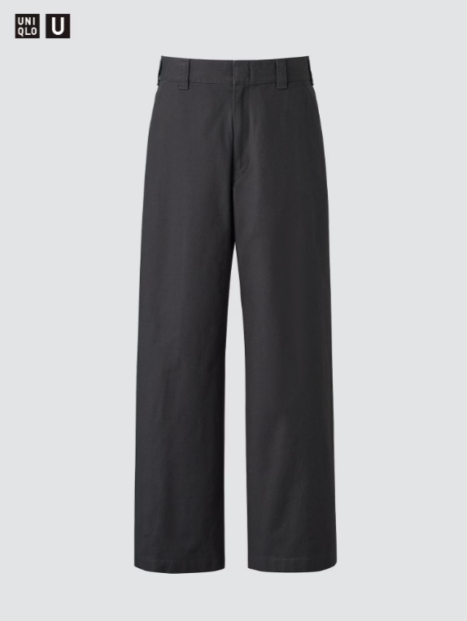
※時期によっては在庫切れの場合あり。その時はユニクロ店舗で「黒のテーパードパンツ」「黒のワイドストレートパンツ」と聞けば、同等の商品を案内してもらえる。
※画像は黒じゃないけどちゃんと黒を買ってな。
値段：約3,990〜4,990円
なんでこれかっていうと、
- 黒のストレート or テーパードシルエットで足がまっすぐ長く見える
- シワになりにくい
- 洗濯機でガンガン洗える
- 約4,000円。安い
正直これ以上コスパいいパンツ、俺は知らん。
テーパードかストレートか迷ったら、体型で選ぶのがいい。
| 体型 | おすすめ | 理由 |
|---|---|---|
| 細身〜普通 | テーパードパンツ | 足首に向かって細くなるから、スッキリ見える |
| 普通〜がっしり | ワイドストレートパンツ | 太もも周りにゆとりがあって窮屈にならない |
サイズの選び方
| 体型 | サイズ目安 | ポイント |
|---|---|---|
| 細身〜普通（ウエスト〜78cm） | S or 76cm | もたつかないジャストサイズを選ぶ |
| 普通〜ややがっしり（〜84cm） | M or 82cm | 太もも周りに余裕があるか確認 |
| がっしり〜大きめ（〜90cm） | L or 88cm | ストレートの方がスッキリ見える |
必ず試着して、裾の長さを確認すること。
ユニクロは裾上げ無料やから、靴の甲にちょっと乗るくらいの長さに詰めてもらってほしい。
2本は持っておく
洗い替え用に黒のパンツは最低2本持っとく。毎日同じパンツ履いてると生地が傷むし、匂いの原因にもなる。
初心者は買わない方がいいパンツ
| NGパンツ | 理由 |
|---|---|
| ジーンズ（初心者） | 色落ち具合、シルエット選びが難しい。合わせ方をミスると一気に安っぽくなる |
| チノパン（ベージュ） | カジュアルすぎてだらしなく見えやすい。上級者向け |
| スウェットパンツ | 部屋着感が出る。デートや外出には不向き |
| スキニー | 2026年の今、シルエットが古い。足の形が出すぎる |
初心者がジーンズとかチノパンに手を出すと、ほぼ確実に失敗する。
まずは黒パンツで「スタイルよく見える」を体感してから、そこから広げていけばいい。
パンツが決まったら、次は足元。身長を盛るか、スタイルを整えるか。シューズは「パンツの次に大事なパーツ」やから、ここも手を抜かんといてほしい。
STEP 2：シューズ
結論：この中から選べばいい
| シューズ | 価格 | ソール高 | こんな人向け |
|---|---|---|---|
| コンバース オールスター（黒/ハイカット） | 約7,700円 | 約3cm | シンプル・定番が好き。どんな服にも合う |
| ナイキ エアマックス（黒） | 約12,000〜16,000円 | 約5cm | 身長を盛りたい。スポーティ寄りが好き |
| ブーツ（黒） | 約8,000〜15,000円 | 約3〜5cm | 秋冬メインで使いたい。大人っぽく見せたい |
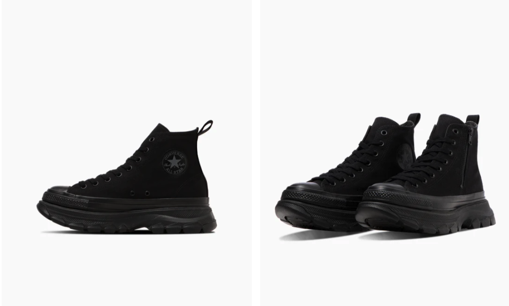
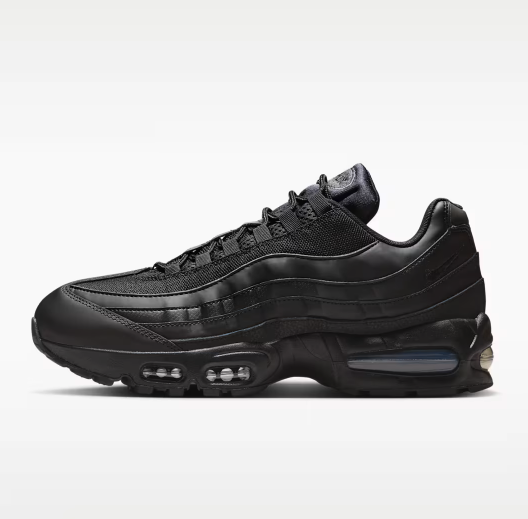
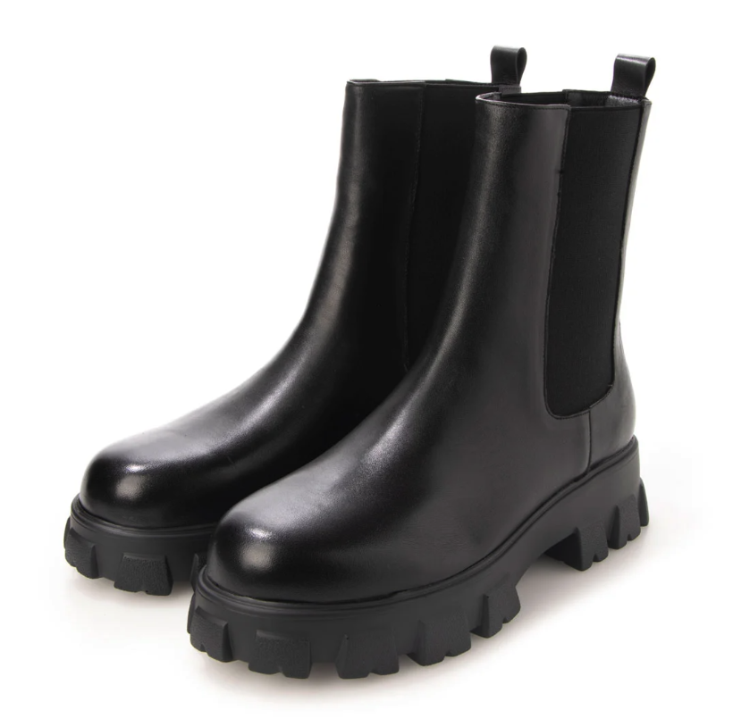
どれを選ぶにしても、色は黒。下半身黒統一の鉄則を忘れんといてほしい。
もう少し予算があって、人と被りたくないならミハラヤスヒロもおすすめ。デザインに個性があって、ソールが厚めだから身長も盛れる。
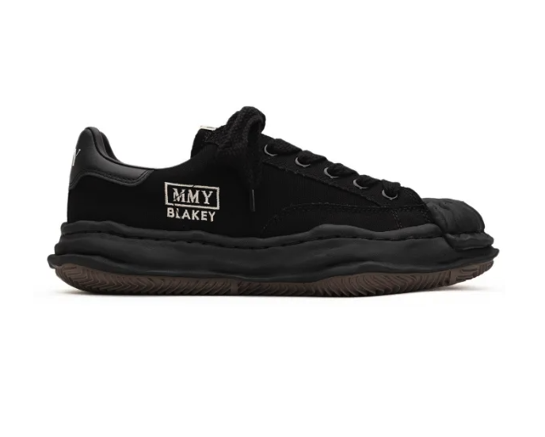
身長別の攻略法
| 身長 | おすすめ | 追加テク |
|---|---|---|
| 170cm以上 | コンバースでもエアマックスでもどっちでもOK | そのままでスタイル良く見える |
| 165〜170cm | エアマックス推奨（ソール5cmで170超え） | これだけで印象がかなり変わる |
| 165cm以下 | エアマックス ＋ インソール追加 | インソールで+3cm。合計8cm盛れる。173cmまで持っていける |
インソールはAmazonで1,000〜2,000円くらいで買える。靴のサイズを0.5〜1cm大きめにしてインソール入れるのがコツ。
身長を本格的に盛りたい人はハイクール（約7,000円前後）もおすすめ。
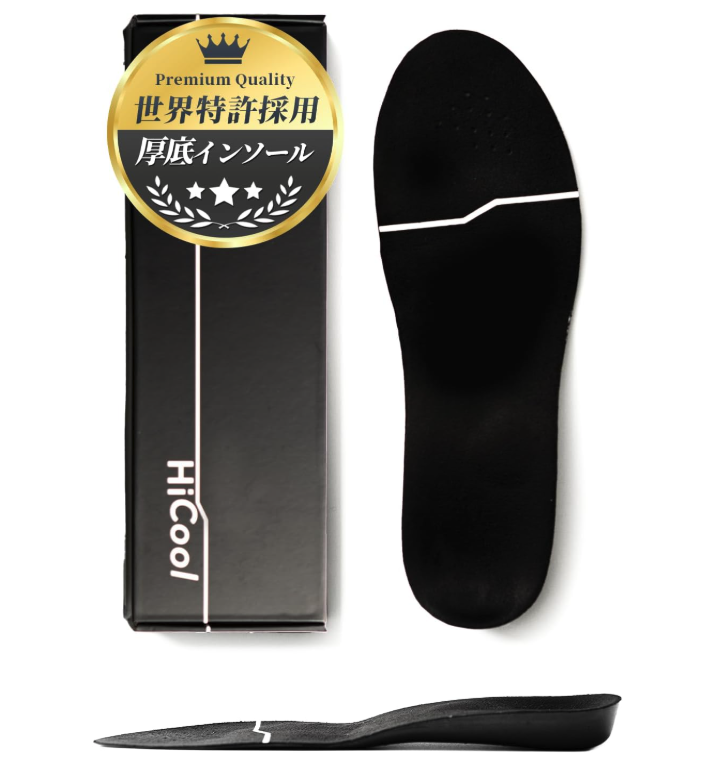
初心者は買わない方がいいシューズ
- 白スニーカー（下半身の黒統一が崩れる。上級者向け）
- 革靴（初心者）（手入れが面倒。服との合わせが難しい）
- サンダル（デート時）（清潔感が出にくい）
- ソール10cm以上のシークレットシューズ（バレる。歩き方が不自然になる）
下半身が黒で整ったら、あとは上半身。ここは正直、シンプルなもので十分なんですよ。
パンツとシューズでスタイルが作れてたら、トップスは清潔感さえあれば成立する。
STEP 3：トップス
春夏（3月〜9月）
| アイテム | 具体的な商品 | 価格 | ポイント |
|---|---|---|---|
| 無地Tシャツ（黒 or 白） | ユニクロ エアリズムコットンオーバーサイズT | 約1,500円 | 汗を吸ってすぐ乾く。夏の味方 |
| ボタンシャツ（白 or 薄いブルー） | ユニクロ ブロードシャツ | 約3,990円 | 羽織りとしても使える。清潔感◎ |
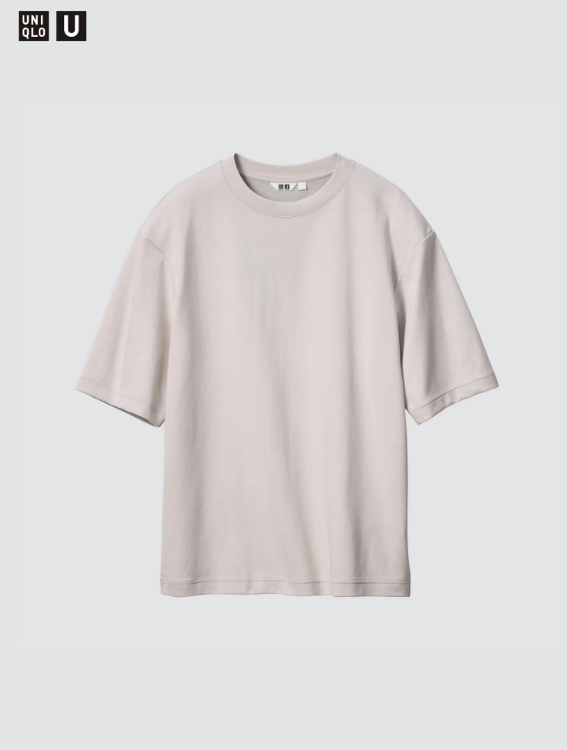
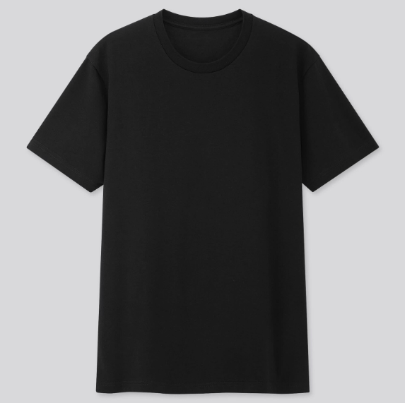
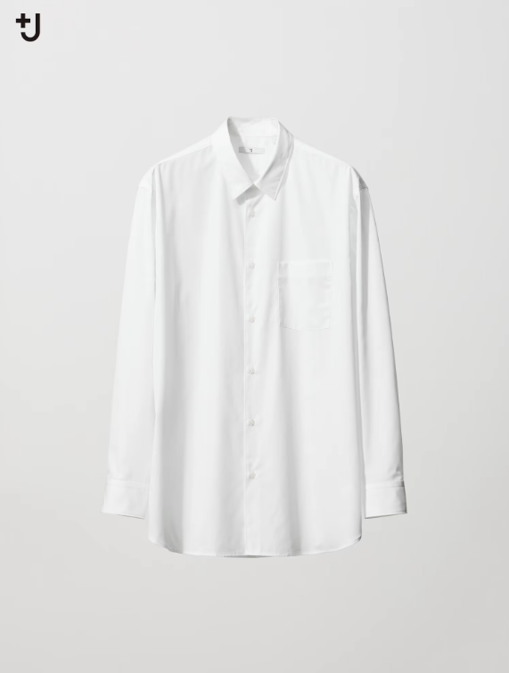
Tシャツは3〜4枚ローテで回す。1枚を何日も着続けるのは匂いの元。ヘビロテするなら同じ色を複数枚買っとくのがいい。
あと、夏場は汗対策としてユニクロのエアリズムインナー（肌色シームレス）を中に着るのがマスト。
Tシャツの汗ジミを防いでくれるし、体臭対策にもなる。これはマジで全員やってほしい。
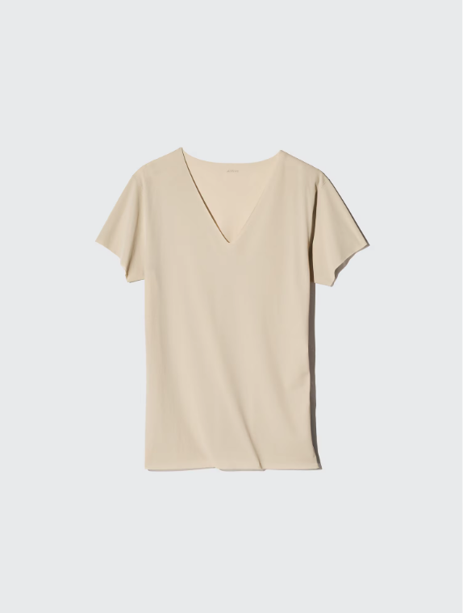
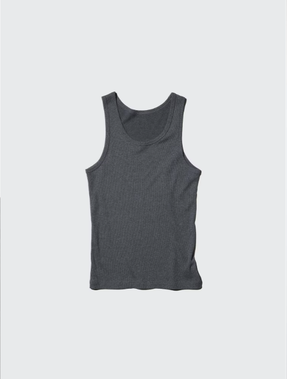
秋冬（10月〜2月）
| アイテム | 具体的な商品 | 価格 | ポイント |
|---|---|---|---|
| タートルネック or モックネック（黒） | ユニクロ ヒートテックコットンタートルネックT | 約1,990円 | 首元が詰まってるだけで大人っぽく見える |
| ニット（黒 or グレー or ネイビー） | ユニクロ エクストラファインメリノクルーネックセーター | 約3,990円 | 上品さが出る。デートにも使える |
| 白シャツ（秋のレイヤード用） | 上と同じブロードシャツ | 約3,990円 | ニットの下に白シャツ。襟と裾をチラ見せ |
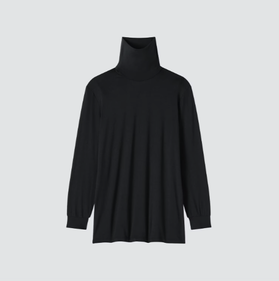
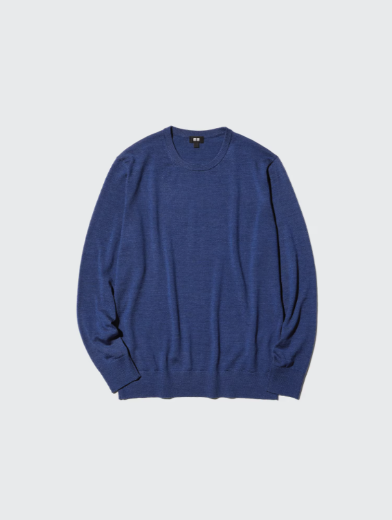
色選びの鉄則
上半身は白、黒、グレー、ネイビーの4色だけ使ってほしい。
柄物、原色、ロゴがデカいやつ。全部いらん。初心者がやると事故る確率が高すぎる。
無地×ベーシックカラーで揃えとけば、何と何を組み合わせても失敗しない。
「今日何着よう」って迷う時間もゼロになる。
トップスまで揃えたら、次はアウター。季節の変わり目にこれがあるかないかで、コーデの完成度が全然違ってくるんですよ。
STEP 4：アウター
春秋（10〜15℃くらい）
→ 黒のブルゾン or レザージャケット
価格帯：5,000〜15,000円
カジュアルだけどスッキリ見える。パンツが黒なら上も黒で、全身ダークトーンにまとまる。
俺が最近気に入ってるのがZARAのフェイクレザーボンバージャケット。価格の割に質感がよくて、ちょっと大人っぽい印象になる。
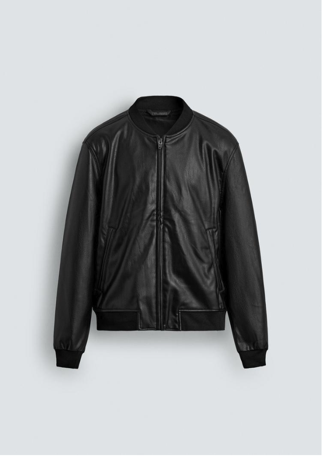
冬（10℃以下）
→ 黒のチェスターコート or ステンカラーコート
価格帯：10,000〜30,000円
コートは投資する価値がある。安すぎるやつは生地がペラペラで安っぽく見える。最低でも1万円以上のものを選んでほしい。
アウター選びのコツ
- 着丈：お尻が半分隠れるくらい（長すぎると足が短く見える）
- 肩幅：ジャストか、気持ちだけゆとりがあるくらい
- 色：迷ったら黒。黒は何にでも合う
ここまでで、パンツ・シューズ・トップス・アウターが揃った。正直、ここまでできたらファッションの8割は完成してる。
最後のアクセサリーは本当に「仕上げ」。余裕がある人だけ読んでくれたらいい。
STEP 5：アクセサリー
ここ、めちゃくちゃ大事なこと言う。
パンツ、シューズ、トップス、アウター。ここが全部整ってから初めて手を出すもの。
服がダサいのにアクセサリーだけ気合い入ってる人、たまにおるけど、あれマジで逆効果やからな。
最低限これだけでいい
→ ネックレス1本
以上。マジでこれだけでいい。
おすすめネックレス
| ブランド | 価格帯 | 特徴 |
|---|---|---|
| スワロフスキー Towards | 約15,000〜20,000円 | シンプルで上品。蹄鉄モチーフがさりげない |
| シルバー925（ブランド問わず） | 約10,000円〜 | 素材が確かならシンプルなチェーンでOK |
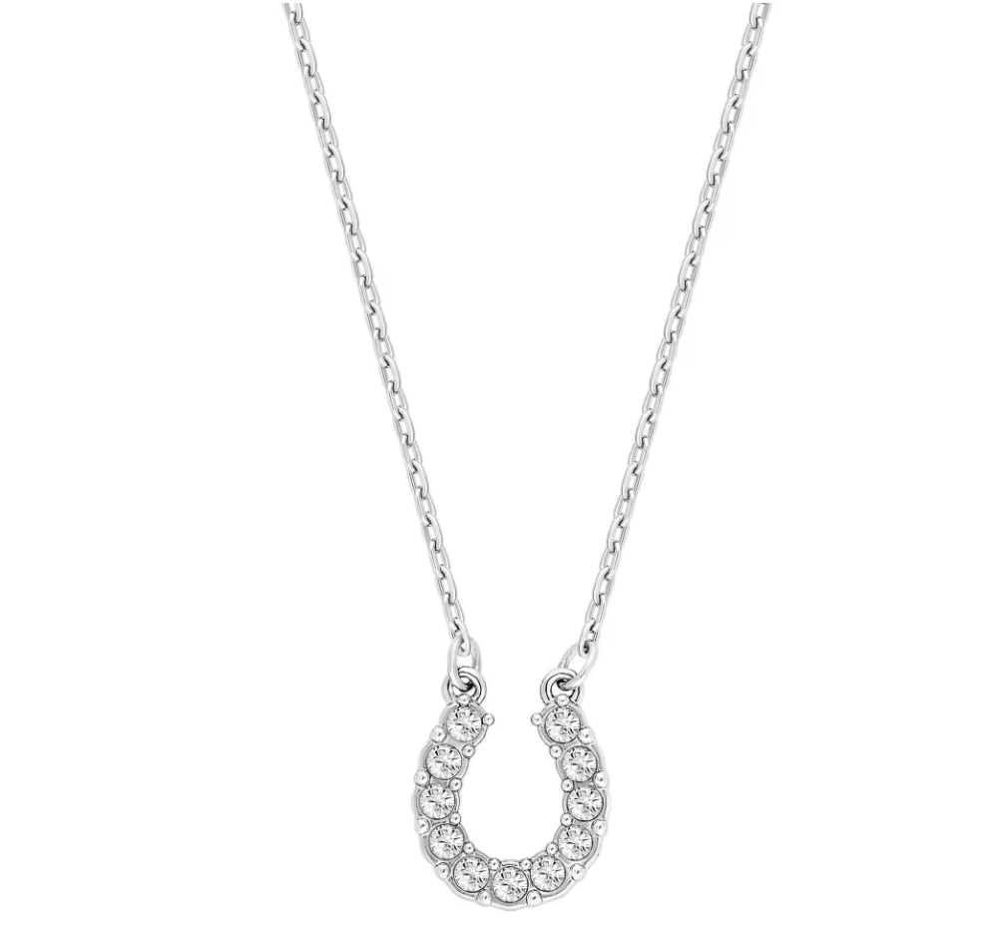
もう少し攻めたい人向け
余裕があるなら、ピアスやリングを1つ足すのもいい。ただし「足す」であって「盛る」じゃない。つけすぎは逆効果やから。
| アイテム | おすすめ | 価格帯 |
|---|---|---|
| フープピアス | シンプルなシルバーの小ぶりなやつ | 約2,000〜5,000円 |
| リング | ヒアーズ（シルバー925、デザインがいい） | 約5,000〜15,000円 |
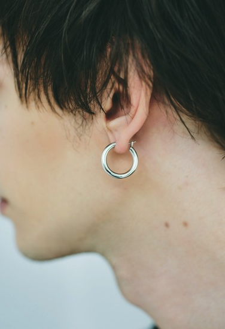
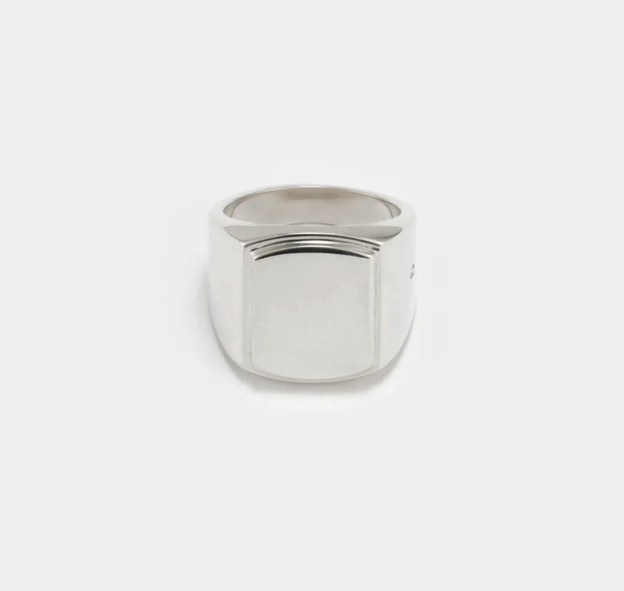
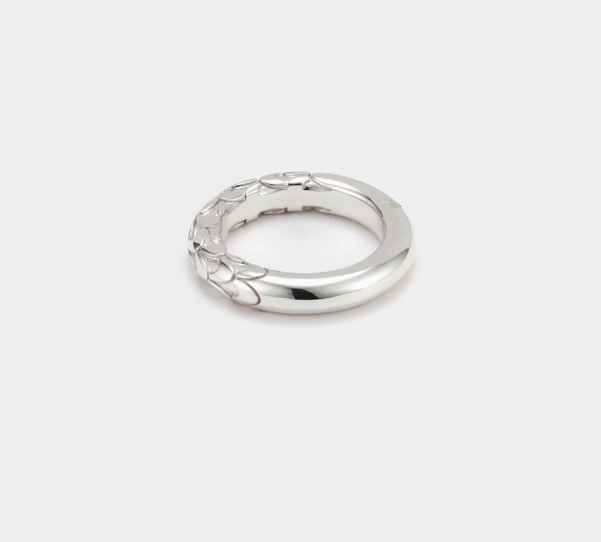
アクセサリーの鉄則
| ルール | 理由 |
|---|---|
| シルバー925を選ぶ | ステンレスや安いメッキはすぐバレる。色味が全然違う |
| 1万円以上は出す | 1,000円以下の安物は触り心地、重さ、輝きで即バレ |
| つけすぎない | ネックレス1本で十分。リング3つにブレスレット2本とか、やりすぎ |
安いアクセサリーでゴテゴテ盛るくらいなら、何もつけない方が100倍マシ。
ここまでで5つのSTEPを全部話した。
でも、「全部同じもの買えばいいんか？」って思った人もおると思う。実はそうじゃなくて、体型や身長によって、同じアイテムでも選び方が変わるんですよ。
ここからがこのプレゼントの核やと思ってる。YouTubeではどうしても「万人向け」の話しかできんけど、本当はみんな体型も身長も違うわけで。あなたに当てはまるところだけ読んでくれたらいい。
【パーソナル攻略】体型・身長別に「あなたはこれ」
▼ 身長165cm以下の人
テーマ：スタイルが短く見えやすい。「小柄」という印象を最小化したい。
| カテゴリ | おすすめ | 理由 |
|---|---|---|
| パンツ | 黒テーパード（裾はやや短めに調整） | 裾にたまりを作らないことで脚がスッキリ見える |
| シューズ | エアマックス ＋ インソール | 合計8cm盛れる。これが最優先投資 |
| トップス | 着丈短めを選ぶ（ベルトが隠れるギリギリ） | 着丈が長いと胴長に見える |
| アウター | ショート丈（ブルゾン、MA-1）推奨 | ロングコートは身長とのバランスが難しい |
ポイント：身長165cm以下の人は、シューズへの投資が一番コスパがいい。エアマックス（約13,000円）＋ インソール（約1,500円）で、見た目の印象がガラッと変わる。ここに一番お金を使ってほしい。
▼ 身長165〜170cmの人
テーマ：平均的だからこそ、「ちょっとした差」で印象が大きく変わる。
| カテゴリ | おすすめ | 理由 |
|---|---|---|
| パンツ | 黒テーパード or ストレート（ジャストの裾丈） | 標準的なバランスが一番映える |
| シューズ | エアマックス（ソール5cmで170超え） | 170cmの壁を超えるだけで印象が変わる |
| トップス | ジャストサイズ〜やや余裕 | オーバーサイズすぎると身長が低く見える |
| アウター | ブルゾンでもチェスターでもOK | バランスが取りやすい身長帯 |
ポイント：この身長帯は「何でも似合いやすい」から、清潔感の維持が差をつけるポイントになる。シワのないパンツ、汚れてない靴、サイズの合ったトップス。基本を丁寧にやるだけで周りと差がつく。
▼ 身長170cm以上の人
テーマ：身長のアドバンテージがある。それを活かす服選び。
| カテゴリ | おすすめ | 理由 |
|---|---|---|
| パンツ | 黒ストレート or スラックス | スラックスの方がより大人っぽく見える |
| シューズ | コンバースでもエアマックスでもOK | 無理に盛る必要なし |
| トップス | やや余裕のあるサイズ感でもOK | 身長があるからだらしなく見えにくい |
| アウター | チェスターコート超おすすめ | 身長があるとロングコートが映える |
ポイント：身長が高い人は、スラックス ＋ チェスターコートの組み合わせで「大人の男」感がすごく出る。このルートはかなりコスパ良い。
▼ 細身の人
テーマ：体の線が目立ちやすい。ボリュームを「足す」工夫でバランスが取れる。
| ポイント | 具体策 |
|---|---|
| トップスは「ちょいゆるめ」 | ジャストすぎると骨が目立つ。ワンサイズ上も視野に |
| 重ね着（レイヤード）が味方 | Tシャツ＋白シャツ、ニット＋シャツで上半身にボリューム感 |
| 色は暗めでまとめる | 膨張色の白を面積大きく使うと体の細さが際立つ |
| 筋トレが最強の解決策 | 肩幅が出るだけで服の着こなしが激変する |
▼ ぽっちゃり体型の人
テーマ：横幅を抑えて、スッキリ見せたい。
| ポイント | 具体策 |
|---|---|
| ストレートパンツ一択 | スキニーは体のラインが出る。ワイドは余計に大きく見える |
| トップスはジャストサイズ | 大きいサイズで隠そうとすると逆に太く見える |
| 暗い色を軸に | 黒、ネイビー、チャコールが収縮色で引き締まって見える |
| 縦のラインを作る | 前を開けたシャツを羽織ると縦の線ができてスッキリ |
| 首元はVネックかクルーネック | タートルネックは顔が大きく見えやすい |
自分の体型・身長に合った選び方がわかったところで、次は「結局、この季節は何着ればいいの？」を解決する。
考えるのが面倒な日のために、各季節の「これ着ときゃ間違いない」テンプレを用意した。
季節別コピペコーデ（迷ったらこのまま着てけ）
春（3〜5月）
パターンA：シャツスタイル
- 白のボタンシャツ（袖まくり）
- 黒のストレートパンツ
- 黒の靴下
- 黒のコンバース or エアマックス
パターンB：ブルゾンスタイル
- 黒の無地Tシャツ
- 黒のブルゾン or レザージャケット
- 黒のストレートパンツ
- 黒のエアマックス
夏（6〜8月）
パターンA：Tシャツ1枚
- 白 or 黒の無地Tシャツ
- 中にエアリズムインナー（肌色シームレス）を必ず着る
- 黒のストレートパンツ
- 黒の靴下
- 黒のコンバース or エアマックス
パターンB：シャツ羽織り
- 白の無地Tシャツ（インナー）
- 薄いブルー or 白のシャツ（前開け）
- 黒のストレートパンツ
- 黒のエアマックス
夏は汗対策としてエアリズムインナーがマスト。Tシャツの汗ジミを防いでくれるし、体臭対策にもなる。
秋（9〜11月）
パターンA：ニット＋シャツ
- 黒 or グレーのニット
- 白シャツ（襟と裾をチラ見せ）
- 黒のストレートパンツ
- 黒のシューズ
パターンB：レザージャケット
- 白Tシャツ or タートルネック
- 黒のブルゾン or レザージャケット
- 黒のストレートパンツ
- 黒のシューズ
冬（12〜2月）
パターンA：コートスタイル
- 黒のタートルネック
- 黒のチェスターコート
- 黒のストレートパンツ or スラックス
- 黒のブーツ or エアマックス
パターンB：ニット＋コート
- グレーのニット＋白シャツレイヤード
- ネイビーのステンカラーコート
- 黒のストレートパンツ
- 黒のシューズ
「で、結局いくらかかるん？」ってなるやんか。ここに予算別でまとめたから、自分の財布と相談して選んでみてほしい。
予算別ショッピングリスト
最低限プラン（約20,000円）※まずはここから
| アイテム | 商品 | 価格 |
|---|---|---|
| パンツ ×2 | ユニクロ テーパードパンツ or ワイドストレートパンツ（黒） | 約8,000円 |
| Tシャツ ×2 | ユニクロ エアリズムコットンオーバーサイズT | 約3,000円 |
| 靴下 ×3 | ユニクロ 黒ソックス | 約1,200円 |
| シューズ | コンバース オールスター（黒） | 約7,700円 |
| 合計 | 約19,900円 |
→ 約2万円。これだけで「スタイルがいい人」に見える土台ができる。
標準プラン（約45,000円）
| アイテム | 商品 | 価格 |
|---|---|---|
| パンツ ×2 | ユニクロ テーパードパンツ or ワイドストレートパンツ（黒） | 約8,000円 |
| Tシャツ ×3 | ユニクロ エアリズムコットンオーバーサイズT | 約4,500円 |
| 白シャツ ×1 | ユニクロ ブロードシャツ | 約3,990円 |
| ニット ×1 | ユニクロ メリノクルーネックセーター | 約3,990円 |
| 靴下 ×5 | ユニクロ 黒ソックス | 約2,000円 |
| シューズ | エアマックス（黒） | 約14,000円 |
| アウター（春秋） | ブルゾン（黒） | 約8,000円 |
| 合計 | 約44,480円 |
→ 約4万5千円。春夏秋、どの季節もこれで回せる。
フルセットプラン（約86,000円）
| アイテム | 商品 | 価格 |
|---|---|---|
| パンツ ×2 | ユニクロ テーパードパンツ or ワイドストレートパンツ（黒） | 約8,000円 |
| Tシャツ ×4 | ユニクロ エアリズムコットンオーバーサイズT | 約6,000円 |
| 白シャツ ×1 | ユニクロ ブロードシャツ | 約3,990円 |
| タートルネック ×1 | ユニクロ ヒートテックコットンタートルネック | 約1,990円 |
| ニット ×1 | ユニクロ メリノクルーネックセーター | 約3,990円 |
| 靴下 ×5 | ユニクロ 黒ソックス | 約2,000円 |
| エアリズムインナー ×3 | ユニクロ エアリズム（肌色シームレス） | 約4,500円 |
| シューズ | エアマックス（黒） | 約14,000円 |
| インソール | Amazon購入 | 約1,500円 |
| アウター（春秋） | ZARA レザーボンバージャケット | 約10,000円 |
| アウター（冬） | チェスターコート（黒） | 約15,000円 |
| ネックレス | スワロフスキー or シルバー925 | 約15,000円 |
| 合計 | 約85,970円 |
→ 約8万6千円。春夏秋冬すべて、アクセサリーまで含めたフルセット。1年間これで回せる。
最後に、「これだけは絶対やらんといてほしい」をまとめとく。せっかく服を揃えても、ここでミスったら全部台無しになるから。
やったらあかんNGファッション7選
| # | NGファッション | なぜダメか |
|---|---|---|
| 1 | 白い靴下を見せるコーデ | 足が短く見える。下半身の統一感が崩壊する |
| 2 | 全身ブランドロゴ | 「服に着られてる」感が出る。主張が強すぎて清潔感がない |
| 3 | サイズが合ってないダボダボの服 | だらしなく見える。清潔感ゼロ |
| 4 | ピチピチのスキニー | 2026年の今はシルエットが古い。体型を強調しすぎる |
| 5 | 蛍光色・原色のトップス | 合わせが極端に難しい。上級者でも事故る |
| 6 | 安っぽいアクセサリーの盛りすぎ | ステンレスのリング3つ、チェーン2本とか。一発で安っぽさがバレる |
| 7 | 季節感のない服装 | 真冬に薄い白T1枚、真夏にニット。周りとの違和感がマイナス印象に |
全商品リンクまとめ
このプレゼントで紹介した商品のリンクを一覧にしておく。買い物に行く前にここだけ見返してもらえたら。
パンツ
シューズ
トップス・インナー
- ユニクロ エアリズムコットンオーバーサイズT（5分袖）
- ユニクロ ドライカラークルーネックT（黒）
- ユニクロ ブロードシャツ（白）
- ユニクロ ヒートテックタートルネックT（9分袖） ※秋冬の季節商品
- ユニクロ エクストラファインメリノクルーネックセーター
- ユニクロ エアリズムインナー（肌色）
- ユニクロ タンクトップ（インナー用）
アウター
アクセサリー
※リンクは2026年2月時点のもの。在庫切れや商品入れ替えで表示されないことがあるかもしれへんけど、その時はブランド名と商品名で検索してみてください。
最後に
ここまで読んでくれて、ありがとう。
正直な話、ファッションって「それだけでモテる」ようなもんじゃないんですよ。
でもな。
服を変えた日の、あの「なんか今日いけてる気がする」っていう感覚。あれが全ての始まりなんよ。
鏡見て「お、ええやん」って思える。街歩いてて、ちょっと自信が出る。女の子と会う時に、服のことで不安にならない。
その小さな自信が、次の行動に繋がるんですよ。
- 筋トレ始めてみようかなとか。
- 髪型変えてみようかなとか。
- マッチングアプリのプロフ写真撮り直そうかなとか。
- 気になるあの子に声かけてみようかなとか。
全部、「ちょっとかっこよくなれた」っていう成功体験から始まる。
俺がYouTubeを始めた理由。
大げさに聞こえるかもしれんけど、マジでそう思ってんですよ。
自分に自信がなくて、何をどう変えたらいいかわからなくて、途方に暮れてた頃の俺みたいな人に、「ここから始めたらいい」って道を示したかった。
このプレゼントは、その最初の一歩。
明日、ユニクロ行ってみてほしい。このプレゼントの通りに買ってみてほしい。鏡の前に立って、「お、ええやん」って言ってみてほしい。
そこからや。
応援してる。
リョータ